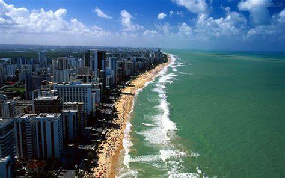
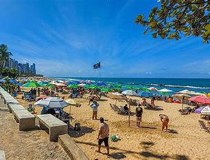

Sobre a Praia de Boa Viagem
A Praia de Boa Viagem é uma das praias mais famosas do Nordeste. Localizada em Recife, ela é conhecida por suas águas claras e mornas, e pela presença de arrecifes que formam piscinas naturais durante a maré baixa.
Importância Turística
A Praia de Boa Viagem é um destino turístico muito procurado, atraindo tanto moradores locais quanto visitantes de todo o mundo. Com uma extensa faixa de areia, é ideal para caminhadas, esportes e, claro, relaxar e aproveitar o sol.
